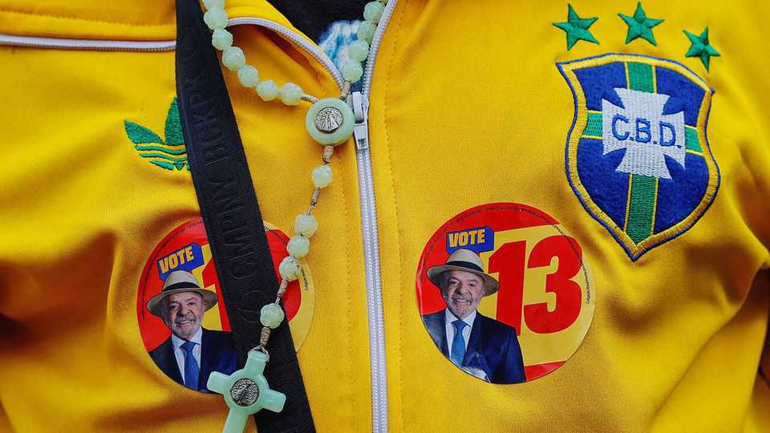
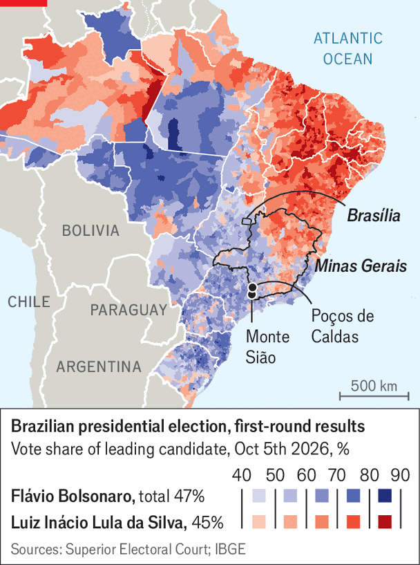

Can Lula, now the underdog, pull off one last trick?
The polls are tightening with just days to go

Oct 22nd 2026
THE PRESIDENTIAL run-off on October 25th is shaping up to be the tightest since Brazil returned to democracy in 1985. The election pits Luiz Inácio Lula da Silva, the 80-year-old left-wing incumbent, against Flávio Bolsonaro, the 45-year-old son of Jair, a former president. No candidate who lost the first round has ever gone on to win the second. But though Lula, as the incumbent is known, trailed Flávio in the first vote on October 4th (Lula got 45%; his rival 47%), he is refusing to go down without a fight. Can he pull off an upset?
Since his loss in the first round, Lula has taken dramatic action. Once a technophobe who declined even to use a mobile phone, he has lately begun posting selfie-videos on Instagram. He has come out in support of lowering the age of criminal responsibility for serious crimes, a policy that was previously anathema to the left. And he has pushed Congress to pass a wildly popular measure that will reduce the work week from 44 hours to 40 hours without pay cuts. His campaign has rallied hundreds of thousands of supporters in marches across big cities, replete with celebrity performances.
He is also making big spending pledges. He has promised to forgive federal tax debts racked up by sole traders such as barbers, manicurists or plumbers, and to hand out $1,000 to 1m of them. He has pledged to make public transport free at weekends. This comes on top of a recent increase in the government’s flagship cash transfer to poor families, the abolition of income taxes for lower-middle-class Brazilians and a decision to outlaw gambling firms (who were paying lots in tax). These new measures all combined could cost the government a total of $58bn by the end of 2027 (over 2% of GDP), according to the Independent Fiscal Institution, a research outfit linked to Brazil’s Senate.
The promises are having an effect. Lula is making up ground on Mr Bolsonaro, particularly among women. Some of the latest polls show them neck and neck in the race (with the caveat that pollsters in Brazil have repeatedly failed to fully capture right-wing sentiment, including before the first round on October 4th, when the polls had Lula ahead). In the week after October 10th betting firms almost doubled Lula’s odds of victory, though they still put him behind his rival.
Mr Bolsonaro is hitting back. He ended up voting in favour of the shorter work week, having previously disparaged it. In a presidential debate on October 18th he alleged that crime had exploded during Lula’s third term (in fact it has fallen). Of the four right-wing candidates knocked out in the first round, who between them received 8% of votes, three have backed Mr Bolsonaro. Despite the narrowing polls, Le Millénaire, an election forecaster based in Paris, puts his odds of victory at 82%.

A trip to Minas Gerais, the country’s second-most populous state, shows the hill Lula has to climb. It is a microcosm of Brazil: its arid north borders the country’s poor north-east, Lula’s heartland. To its south and west, agribusiness and industry reign supreme and voters lean right. No president has ever won without taking Minas. Though Lula carried the state in 2022, he lost it by five percentage points to Mr Bolsonaro on October 4th.
In Monte Sião, a town of 25,000 people, some 2,000 tiny firms churn out knitwear from the ground floors of the owners’ houses. Residents complain about the rising cost of living. In the backroom of a small firm, five seamstresses are adding the finishing touches to dresses. “We pay so much in taxes, taxes, taxes,” complains one. “We have no money left over at the end of the month—we earn just to survive.” Her colleague chimes in: “It’s called the Workers’ Party, but the worker gets nothing!” Their boss blames crushing interest rates for pushing up his debt.
Fatigue with Lula’s Workers’ Party (PT), which has been in power for 18 of the past 24 years, is common in these parts. In Poços de Caldas, a town nearby that is known for its thermal baths and abundant deposits of rare earths, voters are disheartened. “Lula said he would give everyone picanha (rump steak), but today even eggs cost a lot,” says a 45-year-old bricklayer, referring to a promise Lula made on the campaign trail in 2022, that he would make all Brazilians rich enough to eat top cuts of beef. After voting for Lula in the past, he says he will cast a blank vote. In a down-at-heel suburb, Carlos Moisés, a 64-year-old barber, is sweeping the floor of his shop. A lifelong PT voter, he will vote for Flávio, explaining that he is drowning in taxes. “I know the Bolsonaro family isn’t all that great. But we got tired, you understand?”
The PT was built on support from trade unionists, Catholic priests and academics. It has struggled to adapt to a more evangelical Brazil, with workers who are increasingly self-employed. Since 2010 the number of registered sole traders has rocketed from under 1m to 15m. That sector now accounts for almost a fifth of formal jobs. These people commonly earn too much to receive government support but also too little to live comfortably. For years, PT mandarins derided them as “CEOs of one-person companies”. Lula’s pledge to forgive some of their debts is a late attempt to win them over.
Dotted around the green landscape are Pentecostal temples, some preaching a doctrine celebrating wealth. “The growth of Pentecostalism has helped spread conservative values in poorer neighbourhoods,” says Lucas Pavanato, a 28-year-old in São Paulo who has just won a seat in Congress for Mr Bolsonaro’s party. “Left-wing ideology puts all the blame on social structures, whereas religion places responsibility on the individual to improve their life.” Among evangelicals, Lula trails Mr Bolsonaro by 33 percentage points.
Mr Pavanato’s success demonstrates the right’s social-media prowess. In the legislative election held on October 4th he got the second-largest number of votes in the country—just behind Nikolas Ferreira, an ardent evangelical Christian and social-media whizz who has over 30m followers. Brazilians use social media more heavily than people almost anywhere else, and many get their news from such platforms.
Before the first round of the presidential ballot Mr Bolsonaro’s campaign spent at least $2m boosting his content online. Lula’s campaign spent barely $500,000. It handed out lots of stickers with his face on them. Lately his team have been accusing social-media platforms of improperly limiting their campaign-messages’ reach. With only days of campaigning remaining, Lula’s team must fervently hope that the old ways may still prove to be the best. ■